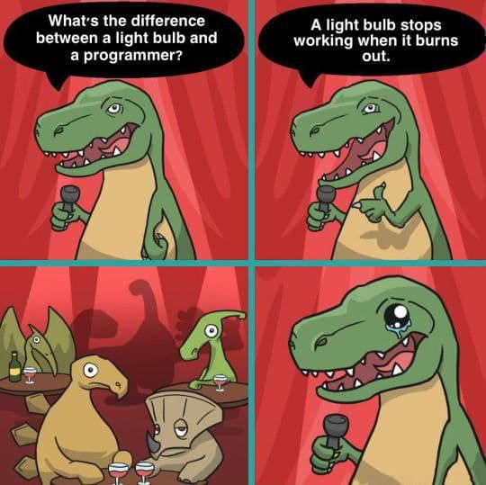

Hello World!
Hello World!
Hello World!
Hello, my name is Rokas...
 Send me to google
Send me to google
| Full Name | Eye color | Height | Age | |
|---|---|---|---|---|
| First name | Second name | |||
| Rokas | Surname something | Blue | 186 | 30 |
| Petras | Surname something | Brown | 180 | 30 |
| Jonas | Surname something | Brown | 175 | 20 |
| Average age: | 26 | |||